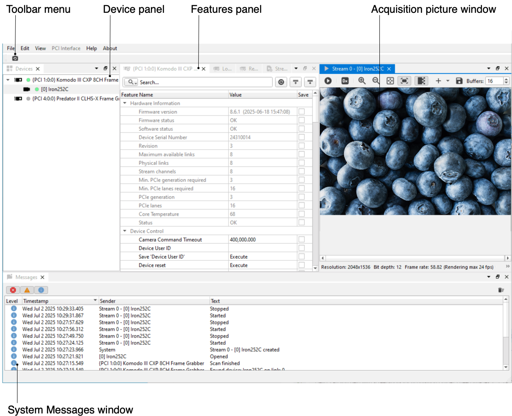
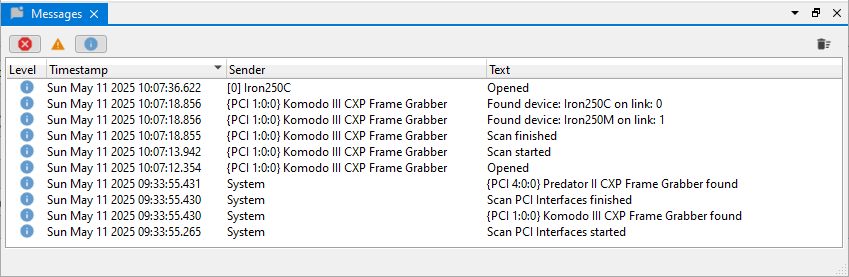
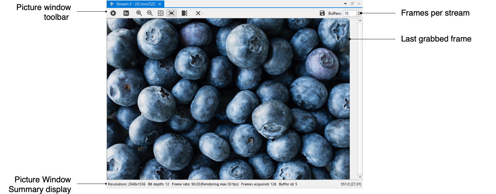
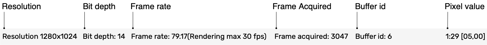

Vision Point II app components
The Vision Point II app main window with all of its components, as shown in the following image:

Figure
1 – Vision Point II app main window
-
Toolbar menu contains function that allows to detect all connected cameras.
-
Device panel shows all available devices.
-
Feature panel allows to configure PCI Interface / Remote Device / Local Device / Data Stream features and controls.
-
Acquisition Picture window displays the last frame that has been grabbed and Information about it.
-
System Messages Window displays general, run-time informational, and error messages.
Main Toolbar Menu
The Toolbar Menu includes Scan Devices on all PCI Interfaces button to detect all connected cameras.
Figure
2 – Main toolbar menu
Device Panel
The Device panel displays all available devices – Frame Grabbers and connected Cameras.
Figure
3 – Device tab
System Messages Window
The System Messages Window displays general, run-time informational, and error messages regarding the state of stream grabbing and changes to various components. If it is not needed, the Message Window can be hidden/shown via the View tab of the Vision Point II app menu bar.The messages can be sorted by importance level, data, sender etc. by tapping on the appropriate column header.To clear messages, use the bin icon in the upper right corner.

Figure
4 – System messages window
Acquisition Picture Window
The Acquisition Picture Window displays the last frame that has been grabbed. Information on frame rate and image format can be found at the bottom of the Picture Window.

Figure
5 – Picture window
Picture Window Summary
The Picture Window Summary display toolbar is shown below and includes the following components:

Figure
6 – Picture window summary display toolbar
| Button | Description |
| Resolution | Resolution or Video format of the image |
| Bit depth | The number of bits used to define each pixel |
| Frame rate | The frames frequency acquired from Camera per second |
| Frame acquired | The numbers of frame acquired from Camera |
| Pixel value | Location of the mouse cursor in x:y [R G B] |
Table 2 – Picture window summary description